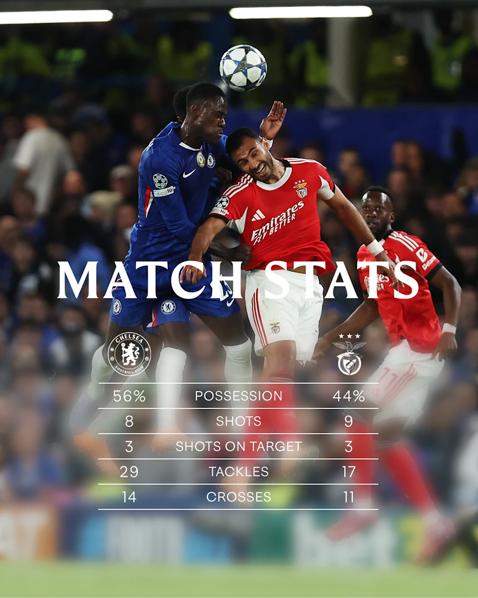
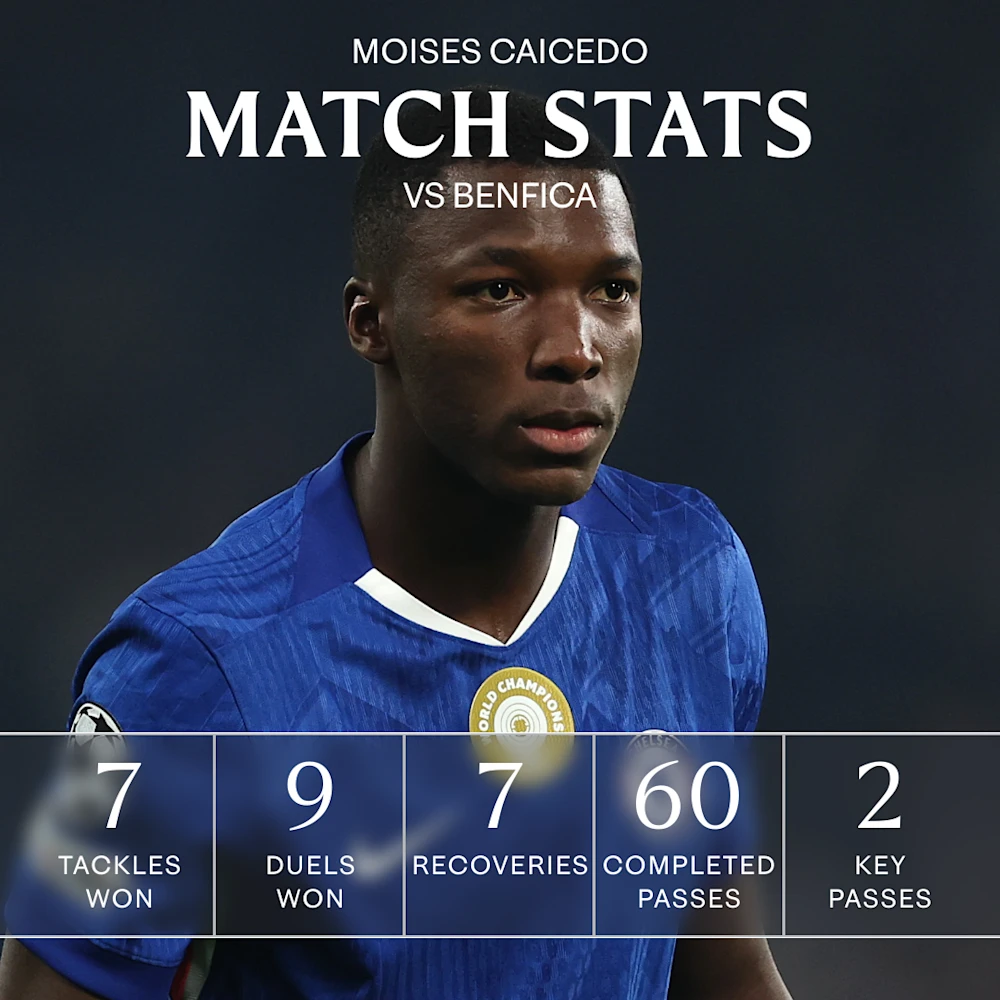
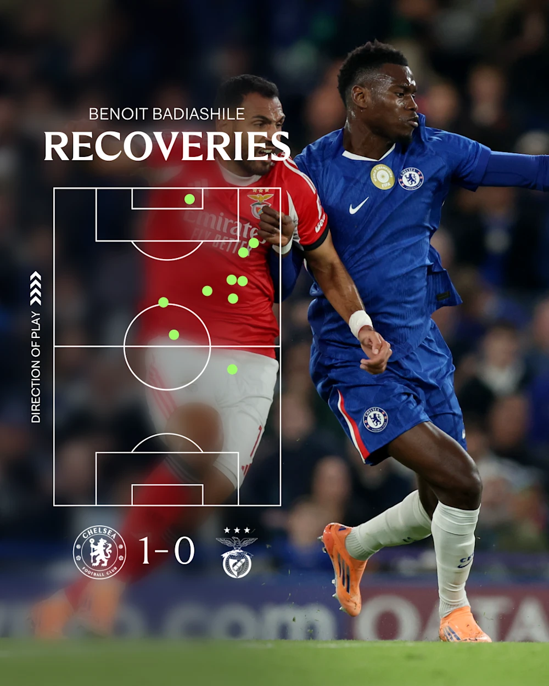
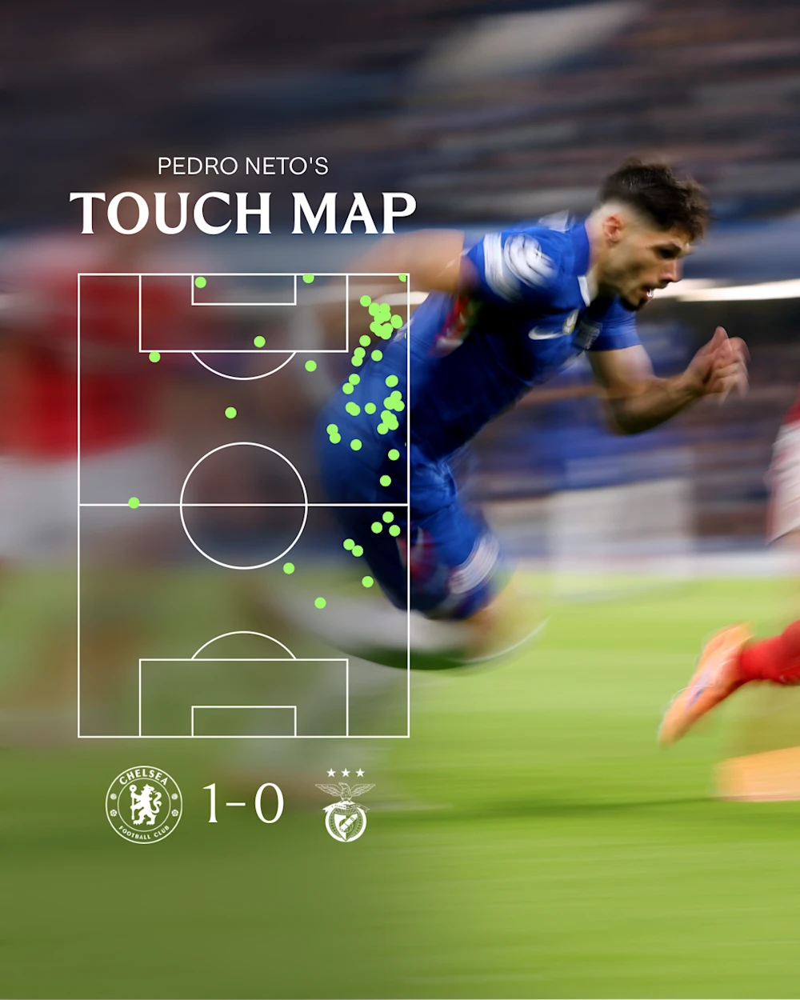

Pada Selasa malam, Chelsea memastikan kemenangan yang sulit atas Benfica untuk membuka akun kami di Liga Champions musim ini. Di sini kita melihat dari dekat tiga aspek permainan yang sangat penting bagi kesuksesan kami.
Bekerja keras untuk melewati batas
Gol bunuh diri Richard Rio di pertengahan babak pertama memisahkan kedua belah pihak dalam sebuah pertemuan yang rendah pada aksi mulut gawang. The Blues secara defensif rajin di seluruh, membatasi Benfica ke penghitungan Expected Goals (xG) hanya 0,85.
Para pengunjung memiliki sembilan tembakan selama pertandingan dan tiga dari mereka (dengan gabungan xG 0,31) datang sebelum satu-satunya gol. Lima dari enam upaya yang tersisa berada di menit ke-83 atau lebih baru, bukti kemampuan kami untuk menjaga Benfica di lengan panjang sementara kami memimpin.

Enzo Maresca mengakui para pemainnya harus menderita terlambat untuk melewati garis ketika ancaman Benfica meningkat, tetapi menggarisbawahi pentingnya ‘kemenangan jelek’. Kemenangan seperti ini diperlukan selama kampanye panjang.
Pelatih kepala juga menyoroti upaya timnya ditampilkan pada malam ketika banyak yang dipilih tidak 100 persen fit, atau tidak sering tampil musim ini. Kami memenangkan 18 tekel ke Benfica 13, dan berhasil di 52,3 persen dari 111 duel yang diperebutkan selama pertemuan agresif.
Terlepas dari jadwal yang sibuk, Maresca mencatat orang-orang seperti Marc Cucurella, Moises Caicedo dan Enzo Fernandez menutupi banyak tanah dan menunjukkan ‘motivasi ekstra’ untuk membantu mendorong kami meraih kemenangan penting yang dibutuhkan setelah hasil baru-baru ini. Tidak mengherankan penggemar Chelsea memilih Caicedo sebagai Player of the Match mereka setelah pertunjukan menonjol lainnya.

Badiashile tegas dan percaya diri saat kembali
Pada awal pertamanya musim ini, Benoit Badiashile terkesan. Pemain Prancis itu dikerahkan di posisi bek tengah kiri dari mana ia menyelesaikan umpan yang jauh lebih banyak daripada orang lain di lapangan (95 – berikutnya adalah Trevoh Chalobah dengan 79).
Badiashile hanya salah menempatkan empat operan sepanjang malam, menyamakan dengan tingkat penyelesaian 96 persen yang mengesankan, dan kemampuannya untuk membangun dari belakang dan bermain melalui garis jelas merupakan aset bagi Maresca. Pelatih kepala menggambarkan kinerja Badiashile setelah itu sebagai 'sangat, sangat bagus', sementara di tribun Matthew Harding menyanyikan namanya sebagai penghargaan atas usahanya.

Badiashile juga memamerkan atribut defensif yang lebih tradisional, membuat sepuluh pemulihan bola yang tinggi di samping tiga izin dan dua intersepsi. Dengan Chalobah diskors untuk kunjungan Sabtu Liverpool dan bek tengah lainnya yang menderita cedera baru-baru ini, kembalinya Badiashile ke aksi adalah dorongan selamat datang bagi The Blues.
Pemain sayap membuat tanda mereka
Satu-satunya gol mungkin telah dimasukkan melalui jaringnya sendiri oleh Rios, tetapi itu berasal dari pekerjaan brilian dari dua pemain sayap kami, Pedro Neto dan Alejandro Garnacho.
Itu adalah umpan silang Neto yang menggoda yang menemukan Garnacho, yang dengan cerdik mengarahkan bola kembali ke area bahaya di mana Rios hanya bisa membantingnya melewati kipernya sendiri.
Maresca telah lama menyatakan pentingnya pemain sayapnya menyerang tiang belakang dan akan senang melihat Garnacho melakukan hal itu – itu menunjukkan adaptasi mulus penandatanganan baru untuk hidup di Chelsea dan Cobham.
Dua tekel Neto menang dan lima pemulihan bola adalah yang paling banyak dari penyerang, dan memberikan bukti material tentang tekadnya untuk membantu upaya kolektif yang sangat jelas ketika Anda melihatnya berlari ke atas dan ke bawah di kedua sisi. Dia sama-sama nyaman pada keduanya, dan fleksibilitas, industri, dan kualitas teknis itu telah memastikan Portugis telah menjadi anggota integral dari Maresca’s Blues.

Hal lain yang diminta Maresca dari pemain sayapnya adalah mencoba untuk mendapatkan satu-v-satu dengan full-back mereka dan mengambil pria mereka. Neto, Garnacho dan pemain pengganti Jamie Gittens semua tampak melakukan itu melawan Benfica. Sementara penandatanganan dari aksi terakhir Borussia Dortmund di kotak oposisi sering tidak membuahkan hasil selama setengah jam di lapangan, pemain berusia 21 tahun itu terus mencari untuk mendapatkan bola dan berlari ke beknya, sesuatu yang menyenangkan Maresca.
Ketika ditanya apakah dia terkesan dengan kinerja Garnacho selama konferensi pers pasca-pertandingannya, Maresca menjawab: “Ya, malam ini kita mulai dengan Garna, itu mungkin pertandingan [Liga Champions atau Liga Premier] pertama yang dia mulai. Ty [George] adalah No.9, dan kita tahu bahwa dia bukan No.9. Facu [Buonanotte] memainkan peran penting malam ini. Itu sebabnya bagi saya malam ini adalah perasaan yang menyenangkan bahwa penting untuk menang karena alasan yang berbeda. Cedera dan para pemain bahwa mereka baru bersama kami.
“Garna sangat bagus. Saya pikir [Jamie] Gittens juga, dia mencoba dalam 20 menit terakhir ketika dia aktif. Keduanya akan menjadi permainan yang lebih baik dan lebih baik setelah pertandingan.”